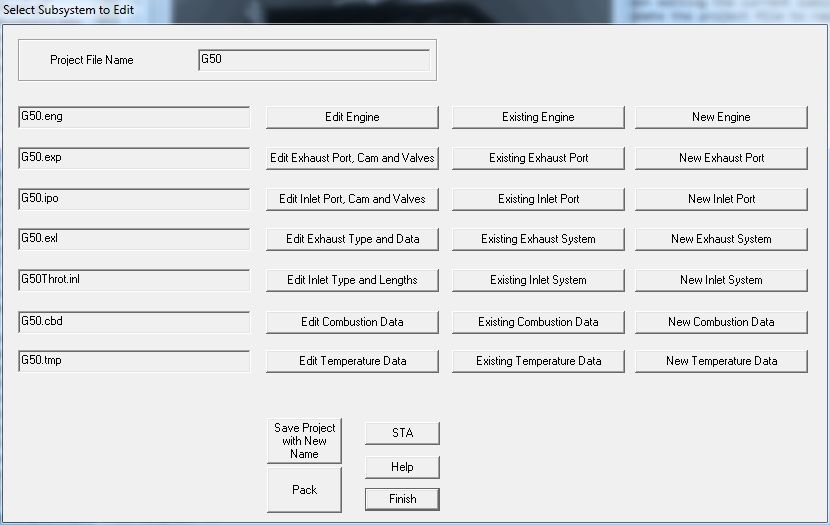

After accepting an existing Project the following dialog will open:

This dialog allows you to choose between editing the current subsystem, swopping it for an existing subsystem or creating a new subsystem. This will also update the project file to replace the previous subsystem name with the new name.